Code
knitr::opts_chunk$set(echo = TRUE, warning = FALSE)knitr::opts_chunk$set(echo = TRUE, warning = FALSE)Burnout is a pervasive issue in many professions, and its consequences can be significant for individuals and organizations alike. According to Maslach and Leiter (2016), burnout is characterized by emotional exhaustion, despersonalization, and reduced personal accomplishment. It is prevalent in a variety of fields, including healthcare (West et al., 2016), among other professions. Burnout can have serious consequences, including decreased job satisfaction, increased absenteeism, and turnover (West et al., 2016).
There is a growing body of research exploring the causes and consequences of burnout, as well as potential solutions. Some scholars have identified factors such as job demands, lack of control, and social support as contributing to burnout (Bakker & Demerouti, 2017).
Lee & Eissenstat (2017), for instance, affirm that psychological job demands and work-to-family conflict, as well as control over working hours/schedule, decision-making authority, and role clarity, have significant effects on burnout.
The aim of this research paper is to provide a comprehensive understanding of how type of business, and seniority level explain the level of burnout.
Null Hypothesis: The type of business, and seniority does not affect the burnout rate.
Alternative hypotheses:
Working in Services (vs product type of business) predict significantly higher burnout rate, especially in Female workers.
Less years of experience (lower seniority) is significantly related to higher burnout rate.
The numbers of work hours allocated affect the burnout rate significantly in employees working from home setup (vs on site).
# Loading packages
suppressPackageStartupMessages(library(dplyr))
suppressPackageStartupMessages(library(tidyverse))
suppressPackageStartupMessages(library(data.table))
suppressPackageStartupMessages(library(psych))
suppressPackageStartupMessages(library(scales))
suppressPackageStartupMessages(library(lattice))
suppressPackageStartupMessages(library(formattable))
suppressPackageStartupMessages(library(kableExtra))
suppressPackageStartupMessages(library(ggplot2))
# Reading the data.
burn <- read.csv("_data/burnout.csv")The dataset was obtained from:
https://www.kaggle.com/datasets/blurredmachine/are-your-employees-burning-out
Let’s see the strucutre of the dataset:
#Structure
str(burn)'data.frame': 22750 obs. of 9 variables:
$ Employee.ID : chr "fffe32003000360033003200" "fffe3700360033003500" "fffe31003300320037003900" "fffe32003400380032003900" ...
$ Date.of.Joining : chr "2008-09-30" "2008-11-30" "2008-03-10" "2008-11-03" ...
$ Gender : chr "Female" "Male" "Female" "Male" ...
$ Company.Type : chr "Service" "Service" "Product" "Service" ...
$ WFH.Setup.Available : chr "No" "Yes" "Yes" "Yes" ...
$ Designation : num 2 1 2 1 3 2 3 2 3 3 ...
$ Resource.Allocation : num 3 2 NA 1 7 4 6 4 6 6 ...
$ Mental.Fatigue.Score: num 3.8 5 5.8 2.6 6.9 3.6 7.9 4.4 NA NA ...
$ Burn.Rate : num 0.16 0.36 0.49 0.2 0.52 0.29 0.62 0.33 0.56 0.67 ...The dataset contain 9 variables and 22750 observations.
Four of the variables are categorical and five are numeric (including one as date).
According to the source of the data, here is an definition of each variable:
Employee ID: The unique ID allocated for each employee.
Date of Joining: The date-time when the employee has joined the organization.
Gender: The gender of the employee
Company Type: The type of company where the employee is working
WFH Setup Available: Is the work from home facility available for the employee
Designation: The designation (designations refer to the expertise and qualifications a person must complete certain jobs) of the employee of work in the organization. In the range of [0.0, 5.0] bigger is higher designation.
Resource Allocation: The amount of resource allocated to the employee to work, ie. number of working hours.In the range of [1.0, 10.0] (higher means more resource)
Mental Fatigue Score: The level of fatigue mentally the employee is facing.In the range of [0.0, 10.0] where 0.0 means no fatigue and 10.0 means completely fatigue.
Burnout Rate: The value we need to predict for each employee telling the rate of Bur out while working.In the range of [0.0, 1.0] where the higher the value is more is the Burnout.
Let’s see a Summary for each variable.
But first let’s do some data wranglin:
#simplify some variable names and transforming date
burn <- rename(burn, fatigue = Mental.Fatigue.Score, hours = Resource.Allocation, WFH = WFH.Setup.Available, doh = Date.of.Joining, id = Employee.ID, business = Company.Type, designation = Designation, burn.rate = Burn.Rate, gender = Gender)
#transforming date of hire to tenure
burn$doh <- as.Date(burn$doh)
burn$tenure <- difftime("2023-4-20", burn$doh, units = "weeks")
burn$tenure <- burn$tenure/52
burn$tenure <- as.numeric(burn$tenure)
#eliminate ID as it's not relevant for the analysis. They are just the identification for each individual
burn2 <- burn %>%
dplyr::select(-id)
burn2 <- burn2%>%
mutate(gender.n = case_when(
gender == "Male" ~ 0,
gender == "Female" ~ 1,
)) %>%
mutate(business.n = case_when(
business == "Service" ~ 0,
business == "Product" ~ 1,
)) %>%
mutate(WFH.n = case_when(
WFH == "Yes" ~ 1,
WFH == "No" ~ 0,
))#creating a df with only continuous variables
burn3 <- burn2 %>%
dplyr::select(-gender, -doh, -WFH, -business)
describe_data <- describe(x=burn3) %>%
dplyr::select(c(vars, n, mean, sd, median, min, max))
kable(describe_data) %>%
kable_styling("striped")| vars | n | mean | sd | median | min | max | |
|---|---|---|---|---|---|---|---|
| designation | 1 | 22750 | 2.1787253 | 1.1351447 | 2.00000 | 0.00000 | 5.00000 |
| hours | 2 | 21369 | 4.4813983 | 2.0472111 | 4.00000 | 1.00000 | 10.00000 |
| fatigue | 3 | 20633 | 5.7281879 | 1.9208387 | 5.90000 | 0.00000 | 10.00000 |
| burn.rate | 4 | 21626 | 0.4520055 | 0.1982264 | 0.45000 | 0.00000 | 1.00000 |
| tenure | 5 | 22750 | 14.8510224 | 0.2894181 | 14.84936 | 14.34936 | 15.35211 |
| gender.n | 6 | 22750 | 0.5234286 | 0.4994618 | 1.00000 | 0.00000 | 1.00000 |
| business.n | 7 | 22750 | 0.3480000 | 0.4763465 | 0.00000 | 0.00000 | 1.00000 |
| WFH.n | 8 | 22750 | 0.5402198 | 0.4983907 | 1.00000 | 0.00000 | 1.00000 |
Histograms for Burnout Rate, mental Fatigue, Work hours allocated, Designation Level and tenure.
hist(burn2$burn.rate, freq = TRUE, col="#a1e9f0", main = "Histogram for Burnout Rate", xlab = "Burn Rate", ylab = "Frequency")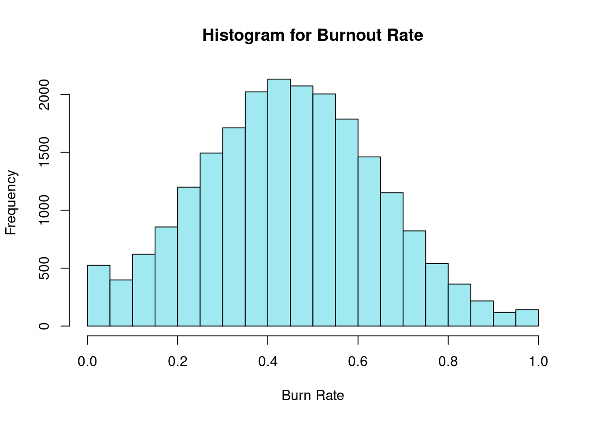
hist(burn2$fatigue, freq = TRUE, col="#a1e9f0", main = "Histogram for Mental Fatigue", xlab = "Values", ylab = "Frequency")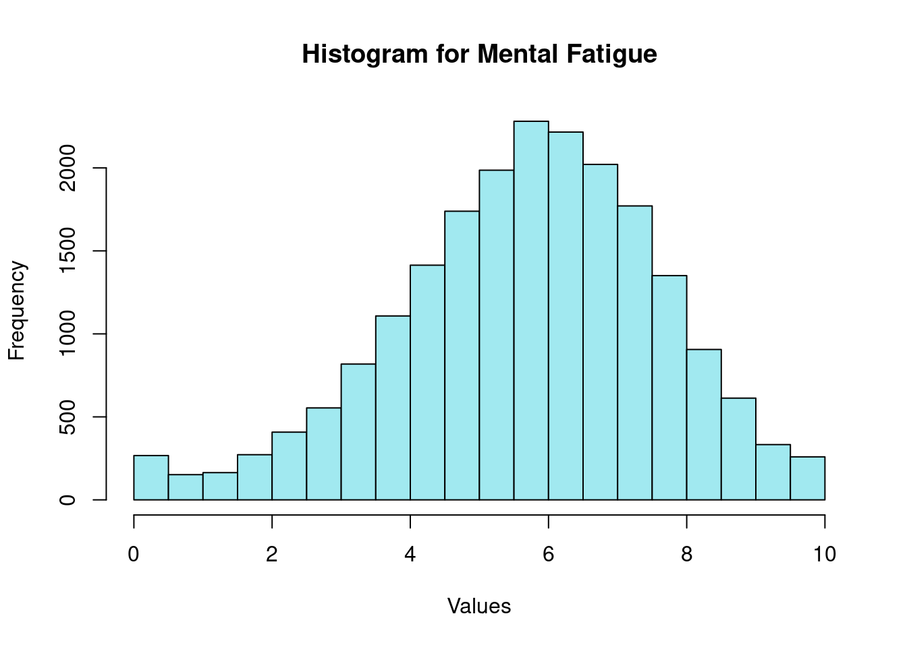
hist(burn2$hours, freq = TRUE, col="#a1e9f0", main = "Histogram of hours allocated", xlab = "Work Hours allocated", ylab = "Frequency")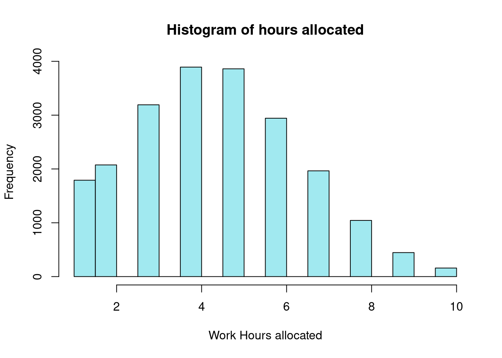
hist(burn2$designation, freq = TRUE, col="#a1e9f0", main = "Histogram of Designation", xlab = "Designation Level", ylab = "Frequency")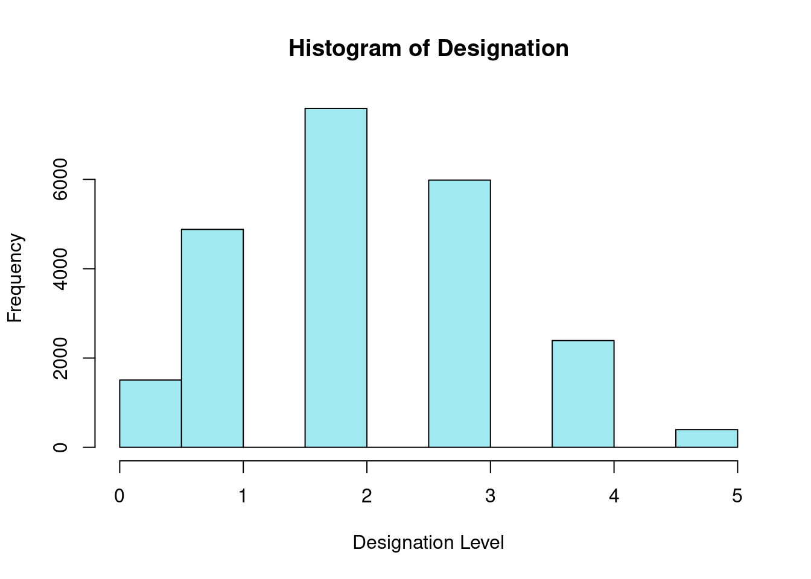
hist(burn2$tenure, freq = TRUE, col="#a1e9f0", main = "Histogram of Tenure", xlab = "Tenure", ylab = "Frequency")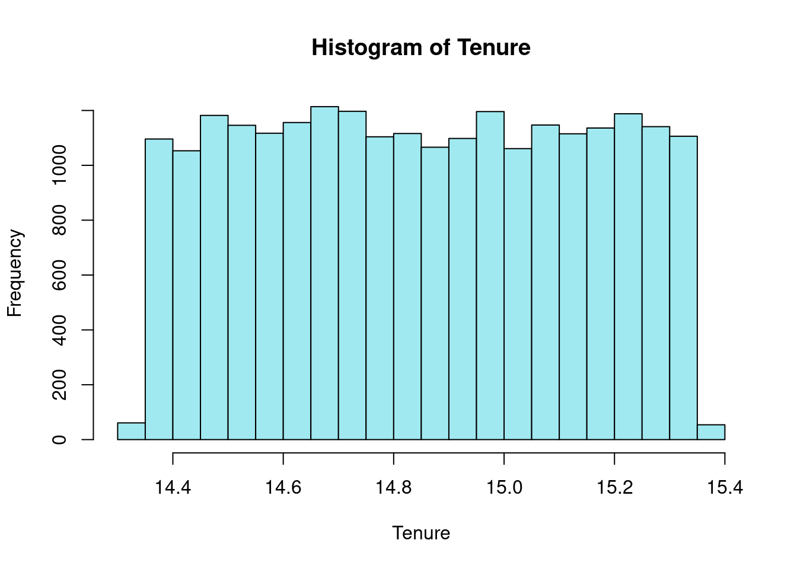
We can note that Burnout Rate shows a distribution close to a normal distribution while a bit skewed to to the right. hours allocated seems also skewed to the right.
In the case of Mental Fatigue, the distribution seems also a bit skewed to the left.
In the case of tenure seems a very homogeneous distribution, with almost the same amount of employees hired within the same year and evenly distributed in that year.
Let’s visualize Gender, Type of Business and Work setting (WFH):
ggplot(burn) +
geom_bar(aes(x=business, fill=gender),
position = "dodge") +
facet_wrap(~WFH)
Seems that there are more females working from home than males regardless the business.
box2 <- ggplot(burn2, aes(x=business, y=burn.rate, fill=gender)) +
geom_boxplot(alpha=0.7, outlier.shape = NA) +
labs(title="Box Plot - Burnout Rate by Gender, Type of business and Work From home (yes or no)",
x ="Type Of Business", y = "Burnout Rate")+
facet_wrap(~WFH, scale="free")
box2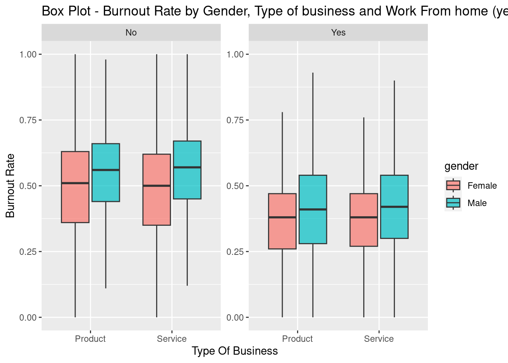
box3 <- ggplot(burn2, aes(x=business, y=hours, fill=gender)) +
geom_boxplot(alpha=0.7, outlier.shape = NA) +
labs(title="Box Plot - Hours allocated, Type of business and Work From home (yes or no)",
x ="Type Of Business", y = "Hours Allocated")+
facet_wrap(~WFH, scale="free")
box3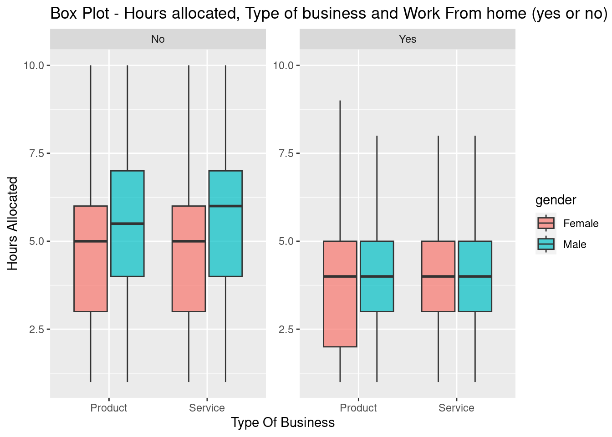
It looks like the Burnout rate is higher in the employees working on site compared to employees working from home, and males shows higher rate compared to females in both type of businesses but it seems a higher difference among employees working from home.
On the other hand, the numbers of hours allocated seems higher for employees working on site and particularly males regardless the type of business.
scatter1 <- ggplot(burn2, aes(designation,burn.rate))+
geom_point(aes(color=WFH))+
geom_smooth(method="lm")+
labs(title="Scatter Plot - Burnout Rate vs Designation grouped by Gender and WFH setup",
x ="Designation", y = "Burnout Rate")+
facet_wrap(~gender)
scatter1`geom_smooth()` using formula = 'y ~ x'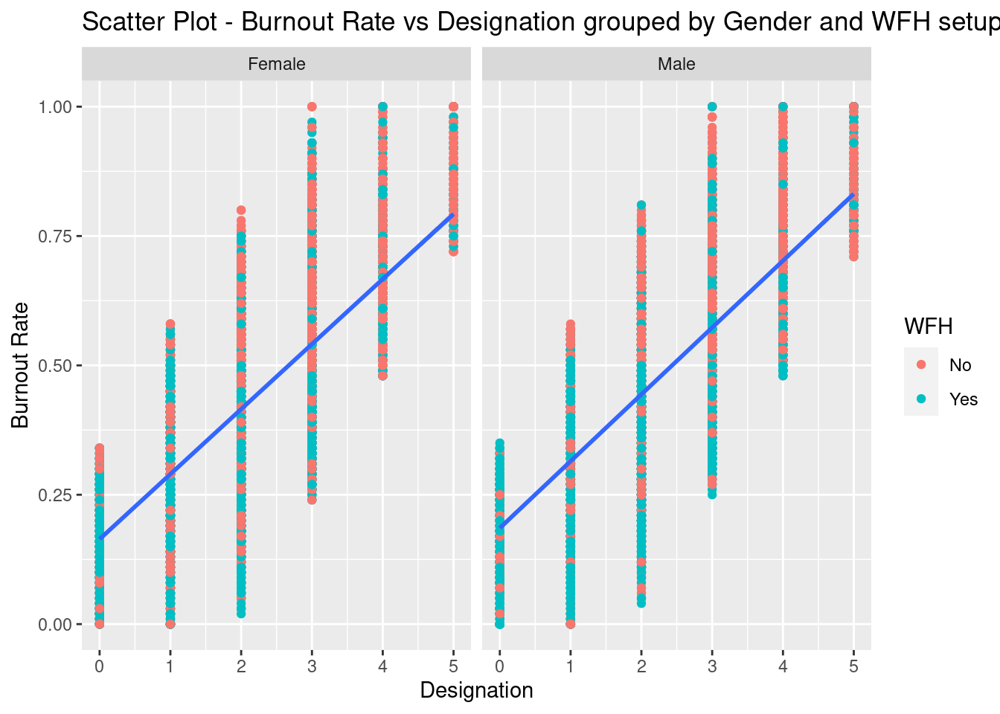
scatter2 <- ggplot(burn2, aes(hours,burn.rate))+
geom_point(aes(color=WFH))+
geom_smooth(method="lm")+
labs(title="Scatter Plot - Burnout Rate vs Hours allocated grouped by Gender and WFH setup",
x ="Hours allocation", y = "Burnout Rate")+
facet_wrap(~gender)
scatter2`geom_smooth()` using formula = 'y ~ x'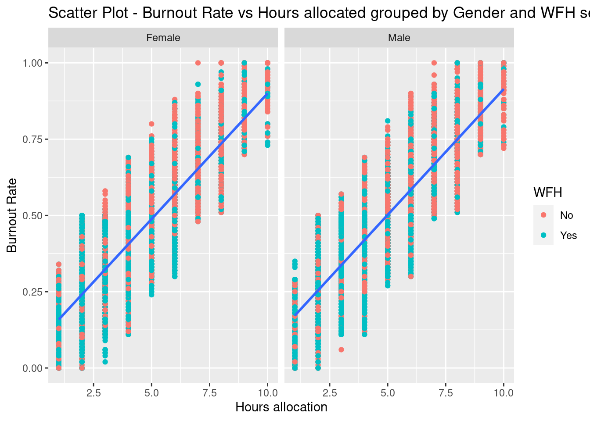
scatter3 <- ggplot(burn2, aes(fatigue,burn.rate))+
geom_point(aes(color=WFH))+
geom_smooth(method="gam")+
labs(title="Scatter Plot - Burnout Rate vs Mental Fatigue grouped by Gender and WFH setup",
x ="Mental Fatigue", y = "Burnout Rate")+
facet_wrap(~business)
scatter3`geom_smooth()` using formula = 'y ~ s(x, bs = "cs")'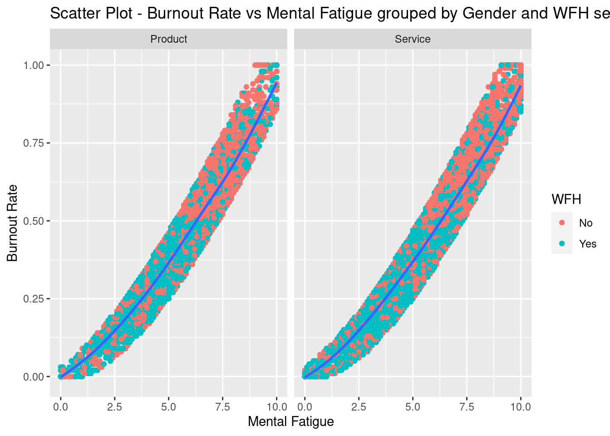
scatter4 <- ggplot(burn2, aes(hours,fatigue))+
geom_point(aes(color=WFH))+
geom_smooth(method="lm")+
labs(title="Scatter Plot - Hours allocated vs Mental Fatigue grouped by Gender and WFH setup",
x ="Hours allocated", y = "Mental fatigue")+
facet_wrap(~gender)
scatter4`geom_smooth()` using formula = 'y ~ x'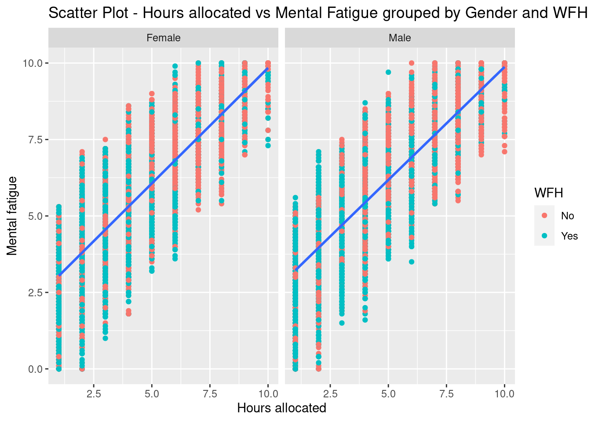
scatter5 <- ggplot(burn2, aes(designation, hours))+
geom_point(aes(color=WFH))+
geom_smooth(method="lm")+
labs(title="Scatter Plot - Hours allocated vs Designation grouped by Gender and WFH setup",
x ="Designation", y = "Hours allocated")+
facet_wrap(~gender)
scatter5`geom_smooth()` using formula = 'y ~ x'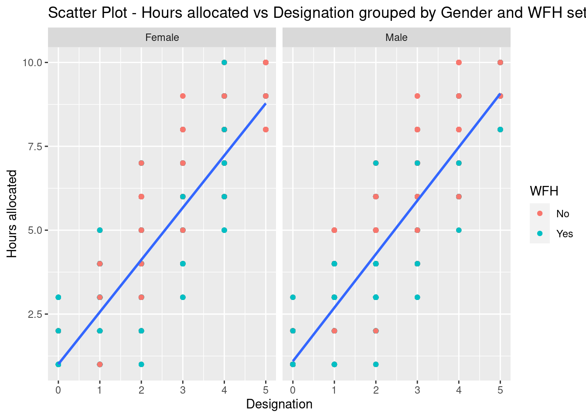
From the charts we can see that there is a positive relationship between:
All of those relationship exist regardless the gender and seems moderated by the work from home setup.
Seems that working from home has a key role in the relationship of the variables.
Lastly the relationship between Burnout rate and Fatigue doesn’t look completely lineal, but let’s check the so I will create a new variable by doing a quadratic transformation of Fatigue, and using it later for the regression
Let’s analyze these initial findings with a few statistics.
# Three-way ANOVA
aov.model1 <- aov(burn.rate ~ business * gender * WFH, data = burn2)
summary(aov.model1) Df Sum Sq Mean Sq F value Pr(>F)
business 1 0.0 0.02 0.446 0.504133
gender 1 20.4 20.40 584.657 < 2e-16 ***
WFH 1 74.3 74.28 2128.566 < 2e-16 ***
business:gender 1 0.0 0.02 0.546 0.459774
business:WFH 1 0.1 0.09 2.465 0.116406
gender:WFH 1 0.4 0.45 12.861 0.000336 ***
business:gender:WFH 1 0.1 0.06 1.736 0.187602
Residuals 21618 754.4 0.03
---
Signif. codes: 0 '***' 0.001 '**' 0.01 '*' 0.05 '.' 0.1 ' ' 1
1124 observations deleted due to missingnessAs we can see in this three-way ANOVA, type of business seems not relevant to explain burnout rate as the F value is not significant, but gender and WFH are both significant and also are when combined.
Let’s explore the relationship among continuous variables using a correlation matrix:
# Cor Matrix
cor_matrix2 <- cor(burn2[, c("burn.rate", "hours", "designation", "fatigue")], use = "complete.obs")
round(cor_matrix2, 2) burn.rate hours designation fatigue
burn.rate 1.00 0.86 0.74 0.94
hours 0.86 1.00 0.88 0.80
designation 0.74 0.88 1.00 0.69
fatigue 0.94 0.80 0.69 1.00The first thing we have to notice is that Hours allocated shows strong correlation with almost all the rest fo the variables, this could represent multicollinearity. So I may need to exclude some variables the Regression analysis.
In this case seems that designation has a very strong positive correlation with hours allocated, seems that the company assign to more senior employees more work hours.
But to explain burnout seems more logic to think that number of work hours explain burnout, so I rather use hours and not designation in the model and avoid multicollinearity.
Also I’ll use backward Stepwise regression to keep only the relevant variables.
# Fit a multiple regression model with predictor variables
lm.model1 <- lm(burn.rate ~ fatigue + gender.n + business.n + hours + WFH.n, data = burn2)
summary(lm.model1)
Call:
lm(formula = burn.rate ~ fatigue + gender.n + business.n + hours +
WFH.n, data = burn2)
Residuals:
Min 1Q Median 3Q Max
-0.157101 -0.041106 -0.000602 0.040688 0.201499
Coefficients:
Estimate Std. Error t value Pr(>|t|)
(Intercept) -0.0801515 0.0016618 -48.232 < 2e-16 ***
fatigue 0.0739451 0.0003566 207.364 < 2e-16 ***
gender.n -0.0045718 0.0008294 -5.512 3.59e-08 ***
business.n -0.0004356 0.0008608 -0.506 0.613
hours 0.0262183 0.0003355 78.151 < 2e-16 ***
WFH.n -0.0117741 0.0008602 -13.688 < 2e-16 ***
---
Signif. codes: 0 '***' 0.001 '**' 0.01 '*' 0.05 '.' 0.1 ' ' 1
Residual standard error: 0.05579 on 18584 degrees of freedom
(4160 observations deleted due to missingness)
Multiple R-squared: 0.9205, Adjusted R-squared: 0.9205
F-statistic: 4.303e+04 on 5 and 18584 DF, p-value: < 2.2e-16# Step Model - Forward
step_model1 <- step(lm.model1, direction = "backward", criterion= "AIC")Start: AIC=-107298.9
burn.rate ~ fatigue + gender.n + business.n + hours + WFH.n
Df Sum of Sq RSS AIC
- business.n 1 0.001 57.852 -107301
<none> 57.851 -107299
- gender.n 1 0.095 57.946 -107270
- WFH.n 1 0.583 58.434 -107114
- hours 1 19.012 76.864 -102018
- fatigue 1 133.857 191.708 -85028
Step: AIC=-107300.6
burn.rate ~ fatigue + gender.n + hours + WFH.n
Df Sum of Sq RSS AIC
<none> 57.852 -107301
- gender.n 1 0.094 57.946 -107272
- WFH.n 1 0.583 58.435 -107116
- hours 1 19.014 76.866 -102020
- fatigue 1 133.857 191.709 -85030summary(step_model1)
Call:
lm(formula = burn.rate ~ fatigue + gender.n + hours + WFH.n,
data = burn2)
Residuals:
Min 1Q Median 3Q Max
-0.156953 -0.041084 -0.000499 0.040699 0.201211
Coefficients:
Estimate Std. Error t value Pr(>|t|)
(Intercept) -0.0803079 0.0016327 -49.186 < 2e-16 ***
fatigue 0.0739452 0.0003566 207.369 < 2e-16 ***
gender.n -0.0045675 0.0008293 -5.508 3.69e-08 ***
hours 0.0262190 0.0003355 78.155 < 2e-16 ***
WFH.n -0.0117739 0.0008602 -13.688 < 2e-16 ***
---
Signif. codes: 0 '***' 0.001 '**' 0.01 '*' 0.05 '.' 0.1 ' ' 1
Residual standard error: 0.05579 on 18585 degrees of freedom
(4160 observations deleted due to missingness)
Multiple R-squared: 0.9205, Adjusted R-squared: 0.9205
F-statistic: 5.379e+04 on 4 and 18585 DF, p-value: < 2.2e-16Type of business is not relevant to the model to explain Burnout. so it is excluded from the model.
Let’s check assumptions
par(mfrow = c(2,3))
plot(step_model1, which = 1:6)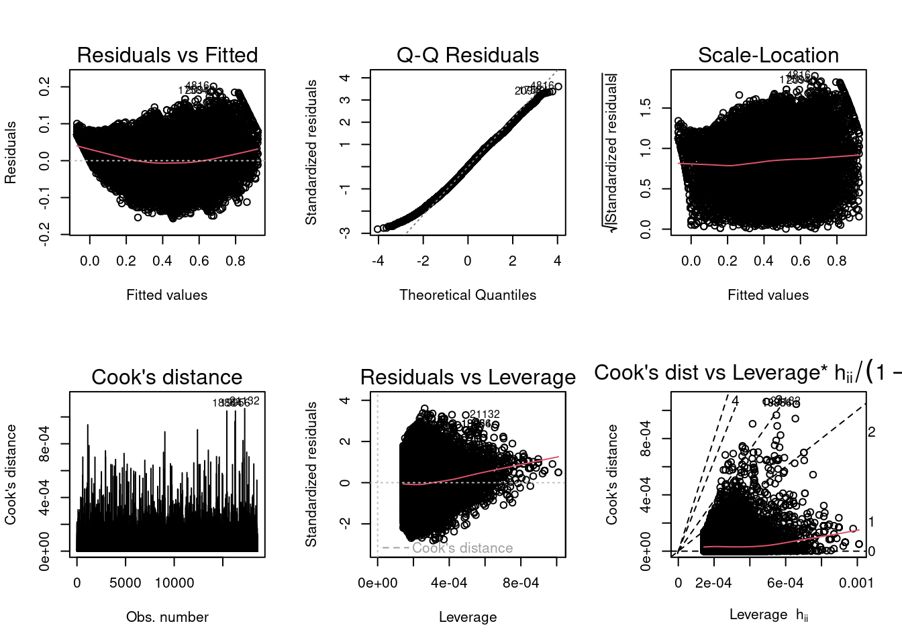
Doesn’t seems there are assumptions violations in this model.
However based on the scatter plot above about Burnout Rate and Fatigue, the relationship doesn’t seem very linear, therefore if we apply a polynomial regression by doing a quadratic transformation of fatigue the model would adjust a bit better.
lm.model2 <- lm(burn.rate ~ business.n + hours + gender.n + I(fatigue^2) + fatigue + WFH.n, data = burn2)
# Step Model - Forward
step_model2 <- step(lm.model2, direction = "backward", criterion= "AIC")Start: AIC=-108108.5
burn.rate ~ business.n + hours + gender.n + I(fatigue^2) + fatigue +
WFH.n
Df Sum of Sq RSS AIC
- business.n 1 0.0008 55.380 -108110
<none> 55.380 -108109
- gender.n 1 0.0610 55.441 -108090
- WFH.n 1 0.3857 55.765 -107981
- I(fatigue^2) 1 2.4715 57.851 -107299
- fatigue 1 10.8741 66.254 -104778
- hours 1 15.8119 71.192 -103441
Step: AIC=-108110.3
burn.rate ~ hours + gender.n + I(fatigue^2) + fatigue + WFH.n
Df Sum of Sq RSS AIC
<none> 55.380 -108110
- gender.n 1 0.0609 55.441 -108092
- WFH.n 1 0.3857 55.766 -107983
- I(fatigue^2) 1 2.4715 57.852 -107301
- fatigue 1 10.8741 66.255 -104780
- hours 1 15.8129 71.193 -103443summary(step_model2)
Call:
lm(formula = burn.rate ~ hours + gender.n + I(fatigue^2) + fatigue +
WFH.n, data = burn2)
Residuals:
Min 1Q Median 3Q Max
-0.150292 -0.041127 -0.000951 0.039024 0.190195
Coefficients:
Estimate Std. Error t value Pr(>|t|)
(Intercept) -2.834e-02 2.410e-03 -11.757 < 2e-16 ***
hours 2.437e-02 3.345e-04 72.844 < 2e-16 ***
gender.n -3.671e-03 8.120e-04 -4.521 6.18e-06 ***
I(fatigue^2) 2.277e-03 7.906e-05 28.799 < 2e-16 ***
fatigue 5.153e-02 8.530e-04 60.407 < 2e-16 ***
WFH.n -9.613e-03 8.450e-04 -11.377 < 2e-16 ***
---
Signif. codes: 0 '***' 0.001 '**' 0.01 '*' 0.05 '.' 0.1 ' ' 1
Residual standard error: 0.05459 on 18584 degrees of freedom
(4160 observations deleted due to missingness)
Multiple R-squared: 0.9239, Adjusted R-squared: 0.9239
F-statistic: 4.512e+04 on 5 and 18584 DF, p-value: < 2.2e-16par(mfrow = c(2,3))
plot(step_model2, which = 1:6)
The model seems to fit better now. The new quadratic Fatigue is significant in the model, so I’ll include it.
Hours allocated, Gender, Fatigue and WFH or not seems to explain significantly the burnout in the employees included in the study. Being Hours allocated and fatigue the most relevant variables in the model to explain burnout (higher t value).
We can’t accept the null hypothesis, at least partially, as the type of business does not affect the burnout rate in employees, but the designation level certainly does.
Specifically there is a positive relationship between burnout and designation level.
This means that the Alternative hypothesis 2 can’t be accepted as it stated a negative relationship between those two variables.
On the other hand the alternative hypothesis 1 stated that being in Services and being female is related to higher burnout rate, and the results indicates that the type of business is not relevant to predict burnout, and being female is neither associated to higher burnout.
However, gender explain in part the burnout. In particular, being female is associated with lower burnout rate compared to males employees.
Lastly, in relation to the alternative hypothesis 3, certainly the number of hours allocated are positive related to burnout, in particular, working on site is associated to more working hours for males and females compared to employees working from home. However within the group of employees working on site, males seems to have significantly more hours allocated than females.
Ultimately, seems that amount of working hours and mental fatigue are the most relevant variables to explain burnout.Gender and WFH setup seems relevant in the sense of how are the hours allocated. Being male working on site absorbing more work hours, therefore more burnout.
Bakker, A. B., & Demerouti, E. (2017). Job demands-resources theory: Taking stock and looking forward. Journal of Occupational Health Psychology, 22(3), 273–285.
Lee, Y., Eissenstat, S. (2017). A longitudinal examination of the causes and effects of burnout based on the job demands-resources model. International Journal for Educational and Vocational Guidance, 18(3), 337–354.
Maslach, C., & Leiter, M. P. (2016). Understanding the burnout experience: Recent research and its implications for psychiatry. World Psychiatry, 15(2), 103–111.
West, C. P., Dyrbye, L. N., Erwin, P., Shanafelt, T. D., (2016). Interventions to promote physician well-being and mitigate burnout: A systematic review and meta-analysis. The Lancet, 388(10057), 2272–228